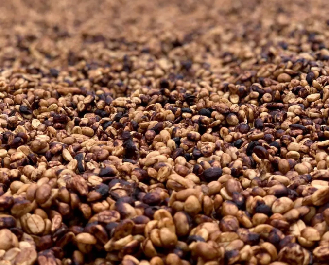

En un coup d'œil :
Le compromis brésilien. On enlève la peau, on garde le mucilage, on sèche immédiatement. Résultat : la douceur du natural sans ses risques, la propreté du lavé sans perdre le corps. C'est le process qui a permis au Brésil de produire en volume sans sacrifier la qualité.
Comprendre : Le meilleur des deux mondes
Pourquoi ce process existe
Dans les années 1990, les producteurs brésiliens font face à un dilemme :
Le natural → Sucré, corps dense, mais risqué :
•Sensible aux pluies soudaines
•Fermentation difficile à contrôler
•Taux de défauts élevé
Le lavé → Propre, stable, mais coûteux :
•Besoin d'eau abondante (rare dans le Cerrado)
•Infrastructure lourde (bassins, canaux)
•Profil plus mince, moins de corps
La solution : Pulped Natural
On dépulpe (comme le lavé) mais on sèche directement sans fermentation ni lavage (comme le natural).
Le mucilage restant apporte :
•40–50% de sucres (glucose, fructose, saccharose)
•Des précurseurs aromatiques (acides aminés, pectines)
•Une protection naturelle du grain pendant le séchage
Résultat sensoriel : Caramel, fruits jaunes (pêche, abricot), noisette, corps rond, acidité douce.
Pulped Natural vs Honey : Quelle différence ?
| Critère | Pulped Natural | Honey |
|---|---|---|
| Origine | Brésil (1990s) | Costa Rica (2000s) |
| Philosophie | Efficacité + volume | Contrôle aromatique |
| Quantité mucilage | ~50–70% (variable) | Yellow/Red/Black (gradué) |
| Fermentation | Minimale, non recherchée | Douce, pilotée |
| Séchage | Rapide (8–15 j) | Lent (10–20 j) |
| Profil | Caramel, noisette, doux | Fruits rouges, miel, texture |
En clair : Le Pulped Natural est le "grand frère pragmatique" du Honey. Moins de finesse aromatique, mais plus de régularité et de volume.
Maîtriser : Les étapes critiques
Phase 1 : Récolte sélective
Objectif : Cerises mûres uniquement (≥18 °Brix)
Méthode :
•Récolte manuelle sélective ou mécanisée avec tri post-récolte
•Flottaison immédiate pour retirer les flottants (cerises immatures ou vides)
•Élimination visuelle des fruits abîmés, surmûris ou noirs
⚠️ Point critique : Les cerises vertes ou surmûries donneront des défauts (unripe/overripe) que le process ne corrigera pas.
Phase 2 : Dépulpage mécanique
Objectif : Retirer la peau + une partie de la pulpe, conserver 50–70% du mucilage
Réglages clés :
| Paramètre | Valeur optimale | Impact si mauvais réglage |
|---|---|---|
| Pression du cylindre | Modérée | Trop fort → parche endommagé ; trop faible → pulpe résiduelle |
| Écartement disques | Selon variété | Inadapté → mucilage insuffisant ou trop épais |
| Débit d'eau | Minimal (juste transport) | Excès → perte de mucilage |
Contrôle visuel post-dépulpage :
•Les grains doivent être collants et brillants
•Pas de pulpe résiduelle visible
•Pas de grains "secs" (mucilage trop retiré)
Ce qui se passe chimiquement :
Le mucilage restant contient :
•Sucres : 14–20 °Brix (glucose 40%, fructose 35%, saccharose 25%)
•Pectines : polymères de sucres qui donnent la texture gluante
•Acides organiques : citrique, malique (pH ~5,5)
•Enzymes : pectinases, β-glucosidases (actives pendant le séchage)
Phase 3 : Séchage direct — Les 48h décisives
C'est LA phase critique du Pulped Natural. Contrairement au Honey, on ne recherche PAS de fermentation marquée, mais un séchage rapide et homogène.
Jour 1–2 : La course contre la fermentation
Variables à surveiller :
| Variable | Plage optimale | Déviation = défaut |
|---|---|---|
| T° ambiante | 20–35°C | >38°C → fermentation explosive (sour) |
| Humidité relative | 45–60% | >70% → moisissures ; <40% → croûte externe, cœur humide |
| Épaisseur couches | 3–4 cm max | >5 cm → points chauds, overripe |
| Brassage | Toutes les 30–60 min | Insuffisant → fermentation localisée |
Ce qui se passe biologiquement :
Pendant les 48 premières heures, le mucilage est encore très actif :
•Levures (Saccharomyces, Pichia) métabolisent les sucres → éthanol + CO₂
•Bactéries lactiques (faible) → acide lactique (traces)
•Enzymes dégradent les pectines → mucilage se liquéfie légèrement
Objectif : Laisser juste assez d'activité pour développer la sucrosité, mais stopper avant les notes fermentées.
Indicateurs visuels :
•Le mucilage forme une couche caramélisée marron clair
•Pas d'odeur vineuse ou alcoolisée
•Pas de liquide qui s'écoule (signe de sur-fermentation)
Jour 3–8 : Déshydratation progressive
Une fois l'humidité descendue sous 30%, l'activité microbienne ralentit fortement.
Paramètres de séchage :
| Jour | Humidité grain | Brassage | Couverture |
|---|---|---|---|
| 1–2 | 55% → 40% | Toutes les 30–60 min | Non |
| 3–5 | 40% → 25% | 3–4×/jour | Si pluie/rosée |
| 6–8 | 25% → 12% | 2×/jour | Nuit (rosée) |
Protection contre les pluies :
Le Pulped Natural a été inventé pour résister aux pluies soudaines du Cerrado brésilien.
Si pluie pendant séchage :
•J1–J2 → Catastrophe (relance fermentation) → couvrir ABSOLUMENT
•J3–J5 → Problématique (ralentit séchage) → couvrir si possible
•J6+ → Mineur (grain déjà stable) → couvrir par sécurité
Jour 8–15 : Stabilisation finale
Objectif final : 10–12% d'humidité, a_w < 0,60
Méthodes de mesure :
•Hygromètre de poche (précision ±0,5%)
•Balance à infrarouge
•Test tactile (grain dur, cassant, pas caoutchouteux)
Indicateur visuel : Le mucilage durci forme une croûte marron foncé autour du parche → c'est normal et souhaité.
⚠️ Erreur fréquente : Stopper le séchage trop tôt (13–14%) → risque de moisissures en stockage.
Phase 4 : Repos en parche
Durée : 4–8 semaines minimum
Pourquoi c'est indispensable :
•Équilibrage de l'humidité : l'eau résiduelle migre du cœur vers l'extérieur du grain
•Maturation enzymatique : les enzymes résiduelles continuent de transformer les précurseurs aromatiques
•Stabilisation aromatique : les composés volatils se fixent dans la matrice du grain
Conditions de stockage :
•Sacs respirants (jute + GrainPro ou sacs de repos spéciaux)
•Température stable (15–20°C)
•Humidité relative 50–60%
•Empilage max 10 sacs de hauteur
Que se passe-t-il pendant le repos ?
| Semaine | Processus interne |
|---|---|
| 1–2 | Migration de l'eau → homogénéisation humidité |
| 3–4 | Activité enzymatique résiduelle → transformation précurseurs |
| 5–8 | Stabilisation aromatique → profil "s'arrondit" |
Test simple : Un café en parche frais (J+1 après séchage) sent l'herbe/foin. Après 6 semaines, il sent le caramel/noisette.
Approfondir : Chimie et profil aromatique
Molécules clés formées pendant le process
Le Pulped Natural se distingue par une dominance de lactones et furaneols, avec peu d'esters volatils (contrairement au Natural ou Honey).
| Molécule | Famille | Arôme | Seuil (ppb) | Origine dans le process |
|---|---|---|---|---|
| γ-Decalactone | Lactone | Pêche, abricot | 5–10 | Dégradation lipidique lente (séchage) |
| Furaneol | Furaneol | Caramel, sucre cuit | 10–50 | Réaction Maillard (mucilage + chaleur soleil) |
| 2-Acétylfurane | Furane | Pain chaud, miel | 50–100 | Sucres + température modérée |
| Maltol | Furaneol | Caramel doux | 20–30 | Formation pendant séchage |
| Sotolon | Lactone | Sirop d'érable | 0,3–1 | Oxydation douce des sucres |
| Éthyl-butanoate | Ester | Fruits jaunes légers | 1–5 | Fermentation minimale (traces) |
Ce qui est faible ou absent :
•Acide acétique → pas de note vinaigre
•Isoamyl-acétate → moins de "banane" que Natural
•Acides gras volatils → pas de notes fermentées marquées
Profil sensoriel comparé
| Attribut | Washed | Pulped Natural | Honey | Natural |
|---|---|---|---|---|
| Sucrosité | ⭐⭐ | ⭐⭐⭐⭐ | ⭐⭐⭐⭐ | ⭐⭐⭐⭐⭐ |
| Acidité | ⭐⭐⭐⭐⭐ | ⭐⭐⭐ | ⭐⭐⭐ | ⭐⭐ |
| Corps | ⭐⭐ | ⭐⭐⭐⭐ | ⭐⭐⭐⭐ | ⭐⭐⭐⭐⭐ |
| Clarté | ⭐⭐⭐⭐⭐ | ⭐⭐⭐⭐ | ⭐⭐⭐ | ⭐⭐ |
| Régularité | ⭐⭐⭐⭐⭐ | ⭐⭐⭐⭐⭐ | ⭐⭐⭐ | ⭐⭐ |
Descripteurs typiques d'un bon Pulped Natural :
•Caramel, noisette grillée, miel
•Fruits jaunes (pêche, abricot, nectarine)
•Texture crémeuse, ronde
•Acidité modérée, équilibrée (malique)
•Finale douce, sucrée, pas d'astringence
En pratique : Roast tips pour Pulped Natural
Comportement du grain à la torréfaction
Le Pulped Natural présente des caractéristiques spécifiques :
Structure cellulaire :
•Plus dense qu'un lavé (mucilage séché intégré)
•Moins dense qu'un natural (pas toute la pulpe)
•Transfert thermique : moyen
Composition chimique :
•Sucres résiduels : élevés (glucose, fructose)
•Acides chlorogéniques : moyens
•Lipides : standards
Profil recommandé (base Loring)
Charge : 195–200°C
↓
Phase Drying (jusqu'à ~150°C)
- Durée : 4–5 min
- ROR cible : démarrage 25–30°C/min → stabilisation 18–20°C/min
- Objectif : évaporer l'eau sans précipiter
↓
Phase Maillard (150–195°C)
- Durée : 35–40% du temps total
- ROR : maintenir 12–15°C/min
- Objectif : développer la sucrosité (furaneols, pyrazines douces)
↓
Premier Crack : vers 200–203°C
↓
Développement : 12–14% (moyen)
- ROR : 4–6°C/min, descente douce
- Éviter stall (≥2 min sans monter en T°)
↓
Drop : 205–207°C selon densité/altitude
Pourquoi ce profil fonctionne
Charge modérée (195–200°C) :
•Préserve les lactones légères (γ-decalactone)
•Évite de "cuire" les sucres résiduels trop vite
Maillard long (35–40%) :
•Transforme bien les sucres → furaneols, maltol
•Crée des pyrazines douces (noisette, cacao léger)
•Développe le corps sans alourdir
Développement moyen (12–14%) :
•Trop court (<10%) → profil vegetal, astringent
•Trop long (>16%) → perte de douceur, goût boisé/sec
•Moyen → équilibre sucrosité/structure
Flux d'air constant :
•Sur Loring : maintenir 60–70% ouverture damper
•Permet évacuation des composés volatils sans surchauffe
•Évite le goût "cuit" ou "étouffé"
Erreurs fréquentes à éviter
| Erreur | Symptôme en tasse | Correction |
|---|---|---|
| Charge trop chaude (>205°C) | Baked, céréale fade | Baisser à 195–200°C |
| ROR trop élevé en drying | Unripe, végétal, astringent | Modérer l'énergie initiale |
| Maillard trop court (<30%) | Manque de corps, acidité vive non balancée | Allonger Maillard à 35–40% |
| Stall en développement | Baked, plat, carton | Maintenir flux thermique constant |
| Drop trop tardif (>210°C) | Amer, boisé, sec | Drop à 205–207°C max |
Les risques et défauts typiques du Pulped Natural
Défauts liés au process
| Défaut | Cause | Molécules | Comment l'éviter |
|---|---|---|---|
| Sour | Fermentation trop longue (J1–J2) | Acide acétique, butyrique | Brasser intensivement, sécher vite |
| Overripe | Cerises surmûries à la récolte | Éthanol, acétate d'éthyle | Tri rigoureux avant dépulpage |
| Moldy | Séchage trop lent, humidité >70% | Géosmine, 2-MIB | Couches fines, bonne ventilation, couvrir nuit |
| Earthy | Contact avec le sol | Actinomycètes | Lits africains propres, jamais séchage au sol |
| Baggy | Stockage prolongé en sacs humides | Composés jute | Repos en parche correct, GrainPro |
Défauts liés à la torréfaction
| Défaut | Cause roast | Impact en tasse |
|---|---|---|
| Baked | ROR trop bas, Maillard insuffisant | Céréale fade, carton mouillé |
| Unripe | Développement trop court | Végétal, pois vert, astringent |
| Woody | Développement trop long | Sec, bois, papier |
| Phenolic | Surchauffe localisée | Médicinal, goudron |
Conclusion : Le Pulped Natural comme standard de régularité
Le Pulped Natural incarne une logique pragmatique :
✅ Efficacité : moins d'eau, moins d'infrastructure que le lavé
✅ Régularité : moins de risques que le natural
✅ Profil accessible : sucré, rond, sans excentricité
✅ Volume : adapté à la production de masse (Brésil = 40% de la production mondiale)
Pourquoi il domine le Brésil :
| Avantage | Impact commercial |
|---|---|
| Résistance aux pluies | Moins de pertes de récolte |
| Séchage rapide | Rotation plus rapide des lots |
| Profil constant | Facilite les blends, réduit les variations |
| Infrastructure simple | Accessible aux petits producteurs |
Limites :
•Moins de complexité aromatique qu'un Honey ou Natural maîtrisé
•Profil parfois "rond mais plat" si mal exécuté
•Difficulté à atteindre des scores >88 en cupping (spécialité haute gamme)
Positionnement idéal :
Le Pulped Natural excelle dans les cafés de volume de qualité moyenne-haute (82–86 points) :
•Base d'espresso blends
•Cafés de café-restaurants
•Torréfaction omni/filtre grand public
Pour de la micro-spécialité (>88 pts), préférer Honey, Lavé ou Natural contrôlé.
Pour aller plus loin
Comparaison process :
•Chapitre Process → Lavé (FW) : clarté maximale
•Chapitre Process → Honey : contrôle aromatique gradué
•Chapitre Process → Natural (UW) : sucrosité extrême
Défauts associés :
•Chapitre Défauts → Sour, Overripe, Moldy, Earthy
Torréfaction :
•Chapitre Chimie aromatique → Formation des lactones et furaneols
💡 Note de formation : Le Pulped Natural est le process "par défaut" de nombreux cafés commerciaux brésiliens. Apprendre à le reconnaître en tasse (caramel, noisette, rondeur) permet de mieux comprendre les profils espresso et de déceler les déviations (sour, moldy) qui trahissent un mauvais séchage.